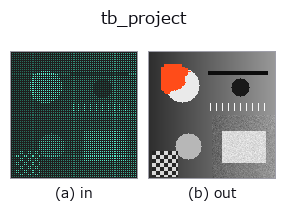

typed op• Data kinds: points → keypoints
• Call: fullseye.apply(img, "tb_project", a=0.5, b=0.5) (2-D model = एक image + दो scalar knobs a,b∈[0,1])

*Figure synthetic 128×128 input पर सच में चलाकर मिला output है। बाईं ओर input, दाईं ओर output। Point clouds ऊपर से देखे गए scatter के रूप में (brightness = z), 1-D series line के रूप में, volumes z दिशा में maximum-intensity projection के रूप में, videos बीच के frame के रूप में, complex images amplitude के रूप में, और जो return values चित्र नहीं बन सकते वे स्वयं values के रूप में दिखाए जाते हैं।*
*Knob a output नहीं बदलता (मापा गया: 0.1 / 0.5 / 0.9 पर एक जैसा)।*
*Knob b output नहीं बदलता (मापा गया: 0.1 / 0.5 / 0.9 पर एक जैसा)।*
Stages (पहले आने वाले ops → यह op, बाएँ से क्रम में):
▸ tb_project: stages का figure (docs site)
दूसरी images पर भी (synthetic scene / photo / coins। ऊपर की row में inputs, नीचे की row में उनके outputs। Knobs default पर):
▸ tb_project: दूसरी images पर output (docs site)
3D points (n,3) को camera (rvec,t,K) से 2D (n,2) पर project करता है (perspective division)।
X_cam = R(rvec) @ X + t, x = K @ X_cam, uv = x[:2] / x[2] की गणना सभी point के लिए एक साथ की जाती है (project_points वाला ही convention)। rvec rotation vector है (axis × angle [rad], scipy का Rotation.from_rotvec), t (3,) translation है, K (3,3) intrinsic matrix है। return value (n,2) float है, जिसमें column 0 u (क्षैतिज, column दिशा) और column 1 v (ऊर्ध्वाधर, row दिशा) है; unit K के अनुसार pixel है।
सावधानी (कोई validation नहीं): camera के पीछे या image plane पर के point (Z_cam <= 0) हटाए नहीं जाते; सीधे भाग दिया जाता है। Z_cam = 0 पर 0 से भाग के कारण inf/NaN मिलता है, और ऋणात्मक Z image के अंदर दिखने वाला नकली coordinate बनाता है, इसलिए visibility का निर्णय caller को करना होता है। shape का validation भी नहीं होता (केवल np.asarray से float में बदला जाता है)। bundle_adjust / mean_reprojection_error के reprojection residual इसी function से बनते हैं।
2-D evolution registry में bridge किया गया 3d का op project। implementation वही है; केवल calling convention को op(v, a, b) के अनुरूप किया गया है। इस op में कोई tunable parameter नहीं है; न a उपयोग होता है, न b।
• Sample data catalog (DL URL / license) — 2-D के लिए skimage.data (BSD/public) + synthetic, 3-D के लिए real data sources (Stanford/PDS आदि) के DL URL।
• Operators का स्रोत और संदर्भ — इस op family के मूल research/methods के स्रोत।
नीचे का program सच में चलता है, यह जाँचा गया है (figure वाला ही input)। Studio की help में यह block buttons बन जाता है, जिनसे इसे वहीं load करके चलाया जा सकता है।
img_to_points 0.50 0.50 tb_project 0.50 0.50
▸ यह pipeline load करें · Load करके चलाएँ
नीचे के उदाहरण मूल ledger op project को call करते हैं। यह bridge op वही implementation है, बस fn(v, a, b) convention के अनुसार ढाला गया है, इसलिए व्यवहार वैसा ही लागू होता है (केवल call का रूप अलग है)।
• bundle_adjust — py -3.11 examples_3d/bundle_adjust.py
keypoints को input के रूप में लेते हैं)identity · tb_keypoints_uv_to_points · tb_keypoints_to_image2d
typed)tb_points_to_voxel · tb_estimate_point_normals · tb_iss_keypoints · tb_project_points · tb_render_point_depth · tb_statistical_outlier_removal · tb_radius_outlier_removal · tb_voxel_grid_downsample
*Provenance: ops.py — 2D operator registry. यह per-op note tools/opdocs.py md से अपने-आप generate होता है (हाथ से edit न करें)।*
© 2026 Kazufumi Furuse — Fullseye operator documentation. Licensed under Apache-2.0.